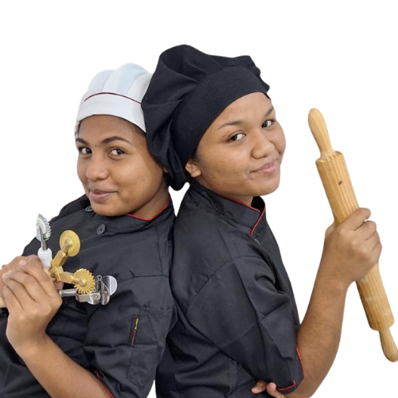

Sabores e Texturas
La Farina
Pão artesanal, focaccias douradas e massas frescas feitas com paciência, tempo e dedicação, mesmo no coração de Díli.
Ver produtos
Quem somos nós ?
A La Farina nasceu do trabalho voluntário da Chef Pollyanna Serrano no Casa Vida Women & Children's Shelter, em Díli. Aqui, jovens timorenses como a Nélia e a Verônica aprendem, todos os dias, a arte da panificação, da massa fresca e da pastelaria — e transformam esse saber em produtos que chegam à tua mesa. Cada pão, cada focaccia, cada massa carrega um pouco dessa história: comida feita com cuidado, para construir um futuro novo.
Mais sobre nós !Recomendados pelo Chef

Pão Artesanal
Pão de fermentação e amassado lento, com crosta crocante e miolo macio. Do clássico ao multigrãos, feito todos os dias.

Focaccias
Focaccias douradas, regadas em azeite e ervas frescas — salgadas ou doces, perfeitas para partilhar.

Massas Frescas
Massa cortada e moldada à mão, no próprio dia. De fettuccine a nhoque, para um prato com sabor de casa.

Molhos & Conservas
Compotas, chimichurri e conservas feitas em pequenos lotes — o toque final para qualquer refeição.
Como encomendar ?
Direto do forno para a tua mesa
1
Escolhe os produtos na loja e toca em "Adicionar"
2
Confirma a tua lista na barra do carrinho.
3
Toca em "Finalizar" e a encomenda é enviada.
O que dizem os nossos clientes
⭐⭐⭐⭐⭐
O pão multigrãos é incrível, sempre fresco e vale mesmo a pena. Já é hábito encomendar todas as semanas.
Tiago Teixeira, Díli
⭐⭐⭐⭐⭐
A focaccia de tomate e pesto foi a melhor coisa que comi este mês. Entrega rápida e tudo super bem embalado.
Helder, Díli

Ainda não deixaste a tua review?
Adorávamos saber a tua experiência com a La Farina — o que gostaste, o que podemos melhorar. Leva só um minuto.
Contacto
Fala conosco
Tens dúvidas, encomendas especiais ou queres saber mais sobre o projeto? Estamos só a uma mensagem de distância.